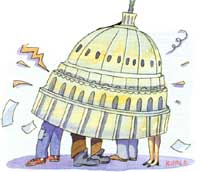

LAST LAUGH
“Let us pray. Humpty-Dumpty sat on a wall. Humpty-Dumpty had a great fall. All the king’s horses and all the king’s men couldn’t put Humpty-Dumpty together again.
“Dear God, in mercy and grace, prevent the Senate from being like Humpty-Dumpty. Keep it from being so fractured and fragmented that no one will be able to put it together again.”
-Rev. Richard C. Halverson, April 5, 1983 From the Congressional Record
Well sir, in case any of you was upset that last issue we told Russian political jokes, this time we'll show that we really believe in journalism's fairness doctrine-we're going to pass along a passel of American political jokes! You see, hardly had the Plumtree Crossing Cross-Country Rail Riders finished jawing with ol' Ivan Redneckovich when the train they was riding pulled right up at Union Station in Washington, D.C.
Once the fellers had found their way outside, the first thing they noticed was the home of our nation's highest lawmaking body-Congress itself. Hypnotized by this august sight, the crew walked right over to the front steps and were immediately met by-Bonnie Roebucks?! That's right, Clovis Roebucks' oldest niece, Bonnie, was working at Congress as a tour guide! [Editor's Note: Give yourself 10 points in the Ultimate Last Laugh Trivia Quiz if you remember Clovis Roebucks, Plumtree Crossing's own permanent politician. Give yourself 20 points more if you recalled he was a state legislator-who, since his last appearance in No. 62, had somehow got himself elected to Congress.]
"Greetings, fellow constituents!" cried Bonnie, in a voice like a possum what'd had speech lessons. "Could we honor ourselves by presenting your voternesses with a perambulation of your own hall of highest legislative pontificance?"
"Bonnie Roebucks!" snapped Newt. "I took you frog-gigging three times 'fore you turned five. Don't give me any gussied-up syrup lipping!"
Bonnie's expression jumped from snobby to sincere. "Why, it's Newt Blanchard! I'm sorry, Clovis tells me to talk that way to all the visitors. Heck, come on, I'd be plum tickled to show some real home folks around."
Bonnie led the fellas straight to the viewing gallery, where they could see scores of dark-tied Congressmen reading papers, scratching their ears, sending assistants out for coffee-you know, running the country-while one solemn person intoned at full volume.
"That's the congressional chaplain," Bonnie said.
"He's praying for the congressmen?" asked Clarence Smithers.
"No, every day he looks out at them, then he prays for the country!"
Sure enough, they could hear the reverend solemnly intoning, "And blessed be the young, for they shall inherit the national debt."
"This place sure is big," said young Billy Parsons. "How many people work here?"
"About half of them," Bonnie said.
"How come no one's paying attention to the preacher?" Lafe Higgins asked.
"Oh, that's how Congress always works. A person gets up to speak and says nothing. Nobody listens-and then everybody disagrees."
Sure enough, by this time Clovis Roebucks himself was giving a long-winded lecture- and nobody was listening. "Uncle Clovis," Bonnie admitted, "can compress the most words into the smallest idea of any man I ever met."
"That's Clovis, all right," Ott pitched in. "When he gets up to talk, it's 'Ready! Fire! Aim!' "
"Your opinion of ol' Clovis don't sound no higher'n ours, Bonnie," Doc Thromberg said. "How come you work for him then?"
"Uncle Clovis may be a mediocre congressman, Doc," Bonnie replied, "but I figure there're a lot of mediocre Americans. And don't they deserve some representation?
"Besides," she went on, "he ain't the only fella here who's missing some buttons off his overcoat. It's like Mark Twain once said: 'Suppose you were an idiot. And suppose you were a member of Congress. But I repeat myself.'
"Just listen." The fellas gave an ear to the debating going on and caught such pearls of political perspicacity as: "There comes a time to put principle aside and do what's right!"
"Some of my friends wanted this amendment in my bill, and some of them wanted it out. And I'm going to stick with my friends!"
After a couple of minutes, Bonnie broke in. "You know, I'll never forget what my little son prayed the night before we moved here. 'God bless Mommy, Daddy, Great Uncle Clovis, my dog and my cat. Now, good-by, God. We're going to Washington.' "
The boys were still chuckling over that last one when Bonnie suddenly got serious. "Fellas, seeing you all has given me someone to joke with again, and I appreciate it-it's a long time between laughs on this job. But I don't mean to be too hard on Congress. Oh, it has its shortcomings and all" (and here a twinkle in her eye let the boys know one last sally was coming), "but I really figure that democracy's a lot like sex. When it's good, it's very, very good.
"And when it's bad, heck, it's still pretty good."
Editor's Note: Next issue-home again.
MOST OF THESE JOKES COME GROM CONGRESSMAN MO UDALL'S HILARIOUS-AND WIDELY AVAILABLE-NEWBOOK, TOO FUNNY TO BE PRESIDENT (HENRY HOLT AND COMPANY, 1987).
|
 ILLUSTRATIONS BY LINDA BLECK |
|
|